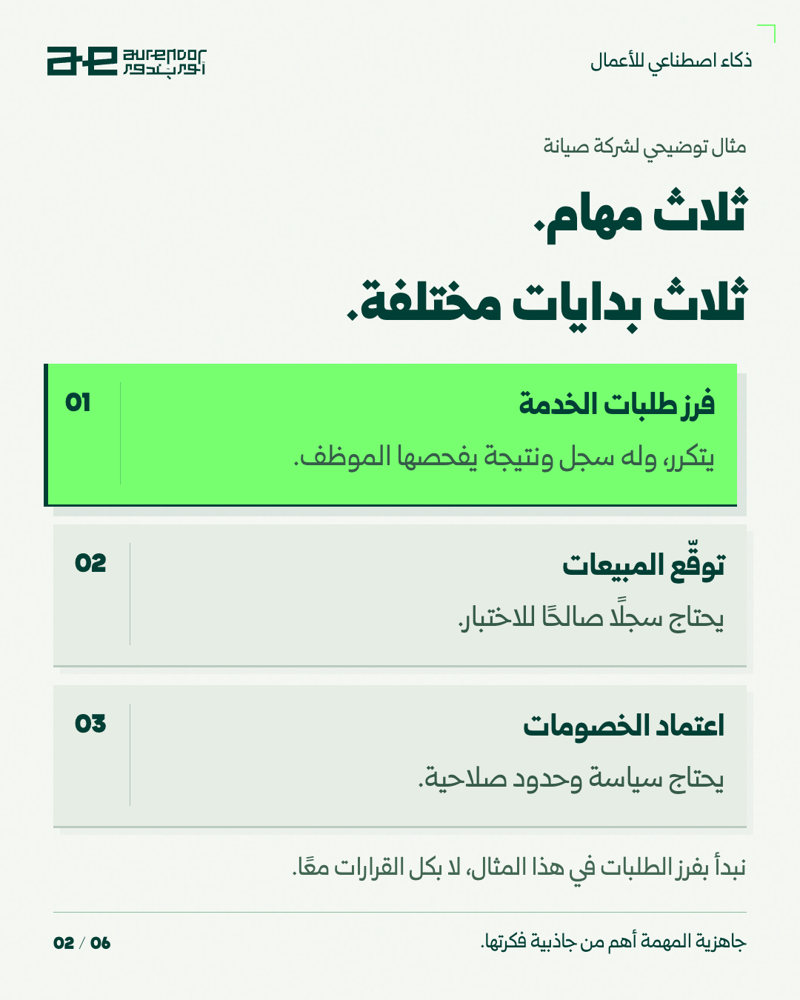
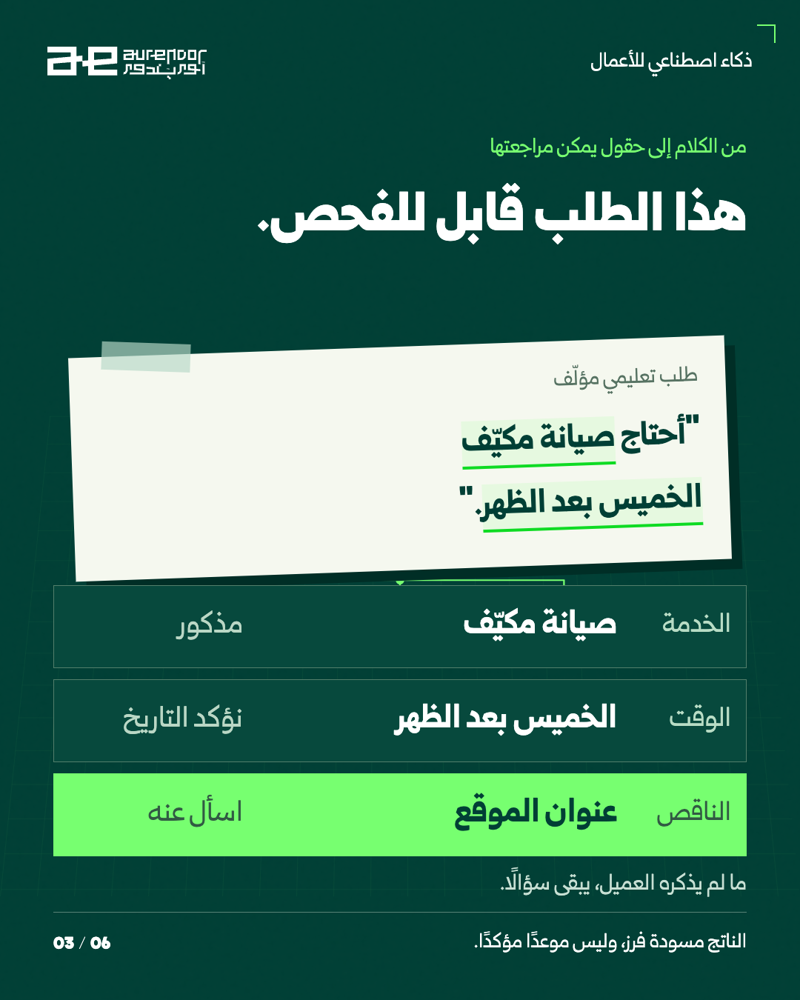
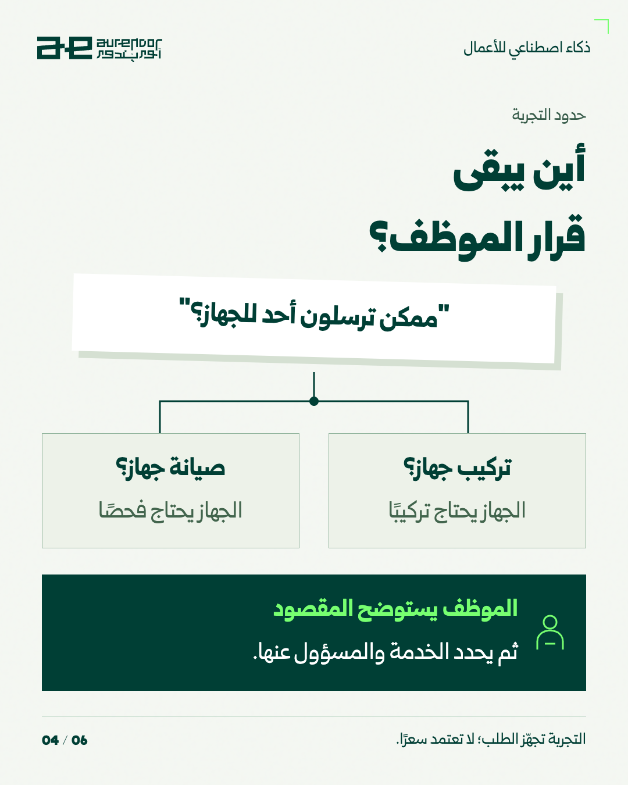
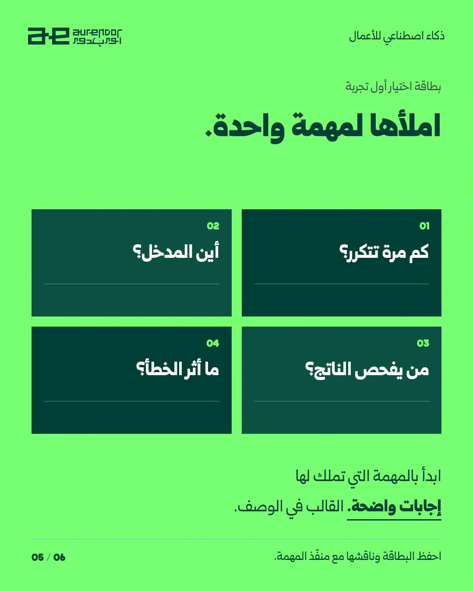
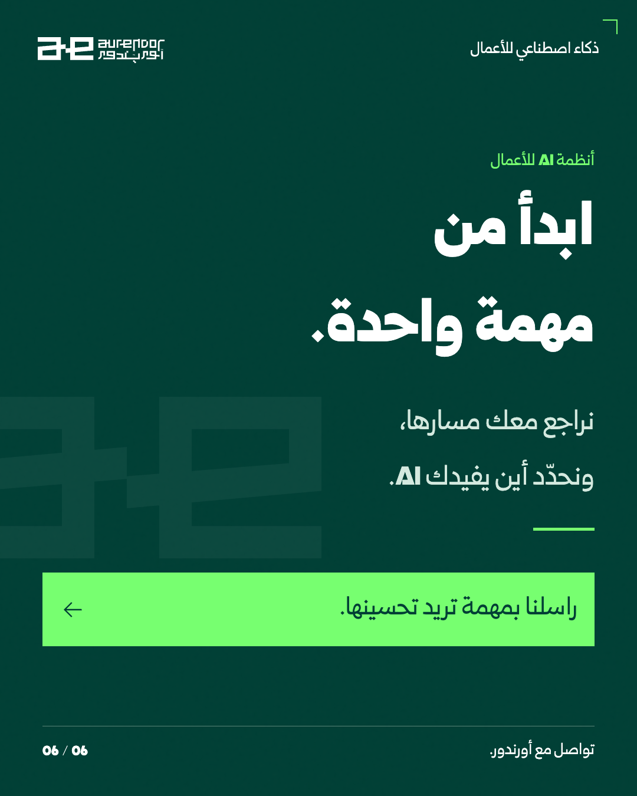
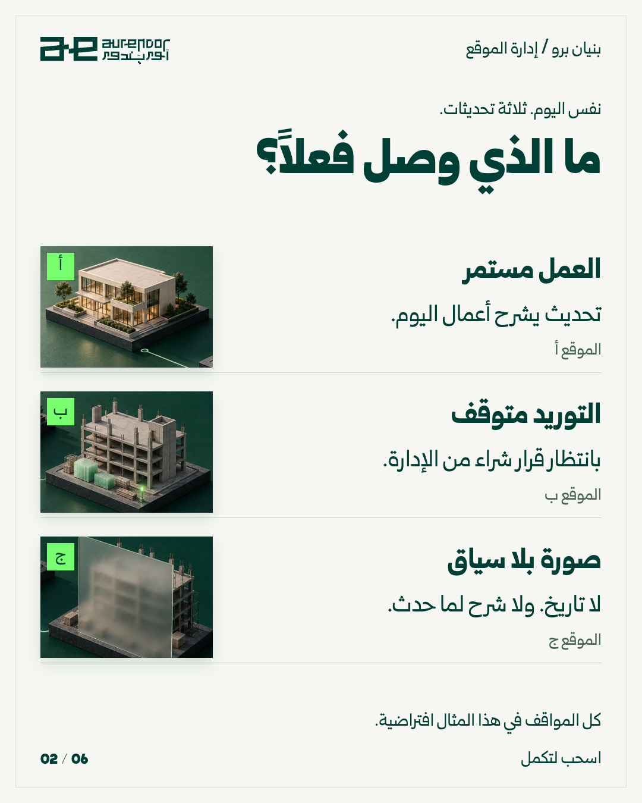
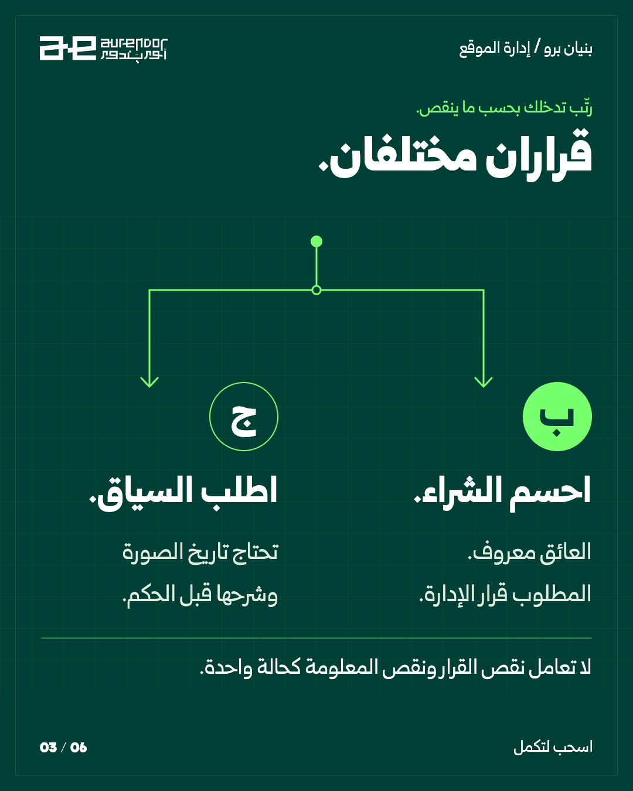
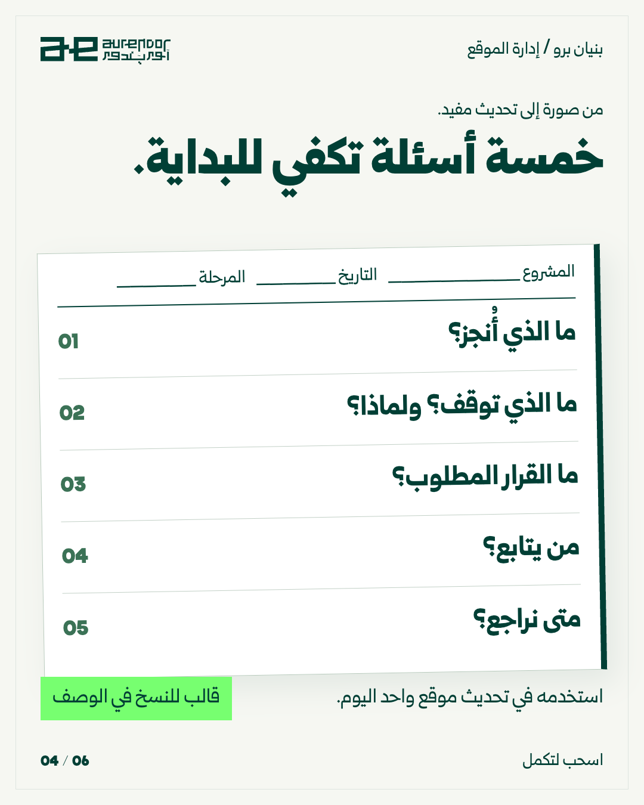
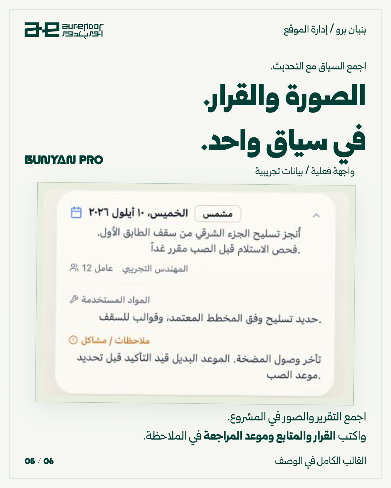
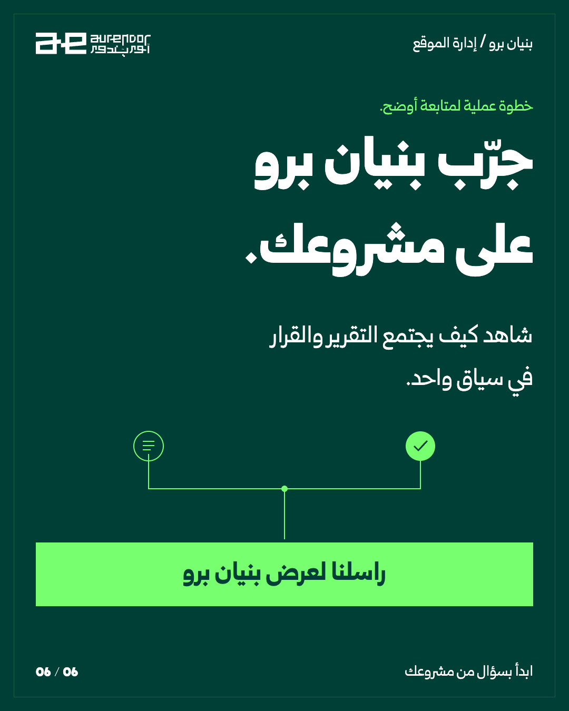

S01 · 2026-09-11 · 09:15 Baghdadأي عمل يستحق أول تجربة AI؟من طاولة فحص دقيقة إلى طلب واضح الحقول: نقارن جاهزية ثلاث مهام ثم نبيّن أين تبقى مسؤولية الموظف.S011 / 6 · تنزيل PNG2 / 6 · تنزيل PNG3 / 6 · تنزيل PNG4 / 6 · تنزيل PNG5 / 6 · تنزيل PNG6 / 6 · تنزيل PNGتنزيل حزمة S01نسخة LinkedIn PDFتنزيل الوصفالفكرة والمصادرالوصف الجاهز للنسخنسخ الوصفقبل أن تختار نموذج AI، اختر نتيجة يستطيع موظفك فحصها. في هذا المثال التعليمي لشركة صيانة، نبدأ بفرز طلبات الخدمة. الطلب «أحتاج صيانة مكيّف الخميس بعد الظهر» يعطينا نوع الخدمة والوقت المطلوب، لكنه لا يعطينا عنوان الموقع أو تاريخ الخميس المقصود. هذه أسئلة نُظهرها؛ لا نكملها بالتخمين. أما «ممكن ترسلون أحد للجهاز؟» فيحتاج استيضاحًا: هل المطلوب تركيب أم صيانة؟ الموظف يؤكد الخدمة ويحدد المسؤول. الناتج مسودة فرز، لا حجز مؤكد ولا سعر معتمد. المهمة الأولى المناسبة هي التي يتكرر مدخلها، ويمكن فحص مخرجها، وتُعرف حدود الخطأ فيها. املأ البطاقة مع الشخص الذي ينفذ العمل. قالب جاهز للنسخ: بطاقة اختيار أول تجربة المهمة: [ ] تكرارها الفعلي خلال أسبوع: [ ] مكان المدخل ومن يسمح باستخدامه: [ ] شكل المخرج المقبول: [ ] صاحب المراجعة: [ ] أثر الخطأ وكيف نرجع عنه: [ ] هل لدينا مثال صحيح وآخر ناقص؟ [ ] قرار: تجربة محدودة / تجهيز البيانات أولًا / تأجيل القرار عالي الأثر. أمثلة مؤلفة للتعليم، وتصميم تصوري. هذا التفكير في مسار العمل هو نقطة بداية أنظمة AI والتكاملات في أورندور. راسلنا بمهمة تريد تحسينها؛ نراجع معك مسارها ونحدّد أين يفيدك AI.نسخ المنصاتinstagram{ "format": "4:5 carousel", "caption": "قبل أن تختار نموذج AI، اختر نتيجة يستطيع موظفك فحصها.\n\nفي هذا المثال التعليمي لشركة صيانة، نبدأ بفرز طلبات الخدمة. الطلب «أحتاج صيانة مكيّف الخميس بعد الظهر» يعطينا نوع الخدمة والوقت المطلوب، لكنه لا يعطينا عنوان الموقع أو تاريخ الخميس المقصود. هذه أسئلة نُظهرها؛ لا نكملها بالتخمين.\n\nأما «ممكن ترسلون أحد للجهاز؟» فيحتاج استيضاحًا: هل المطلوب تركيب أم صيانة؟ الموظف يؤكد الخدمة ويحدد المسؤول. الناتج مسودة فرز، لا حجز مؤكد ولا سعر معتمد.\n\nالمهمة الأولى المناسبة هي التي يتكرر مدخلها، ويمكن فحص مخرجها، وتُعرف حدود الخطأ فيها. املأ البطاقة مع الشخص الذي ينفذ العمل.\n\nقالب جاهز للنسخ:\nبطاقة اختيار أول تجربة\nالمهمة: [ ]\nتكرارها الفعلي خلال أسبوع: [ ]\nمكان المدخل ومن يسمح باستخدامه: [ ]\nشكل المخرج المقبول: [ ]\nصاحب المراجعة: [ ]\nأثر الخطأ وكيف نرجع عنه: [ ]\nهل لدينا مثال صحيح وآخر ناقص؟ [ ]\nقرار: تجربة محدودة / تجهيز البيانات أولًا / تأجيل القرار عالي الأثر.\n\nأمثلة مؤلفة للتعليم، وتصميم تصوري. هذا التفكير في مسار العمل هو نقطة بداية أنظمة AI والتكاملات في أورندور.\n\nراسلنا بمهمة تريد تحسينها؛ نراجع معك مسارها ونحدّد أين يفيدك AI." }facebook{ "format": "Ordered image album", "caption": "قبل أن تختار نموذج AI، اختر نتيجة يستطيع موظفك فحصها.\n\nفي هذا المثال التعليمي لشركة صيانة، نبدأ بفرز طلبات الخدمة. الطلب «أحتاج صيانة مكيّف الخميس بعد الظهر» يعطينا نوع الخدمة والوقت المطلوب، لكنه لا يعطينا عنوان الموقع أو تاريخ الخميس المقصود. هذه أسئلة نُظهرها؛ لا نكملها بالتخمين.\n\nأما «ممكن ترسلون أحد للجهاز؟» فيحتاج استيضاحًا: هل المطلوب تركيب أم صيانة؟ الموظف يؤكد الخدمة ويحدد المسؤول. الناتج مسودة فرز، لا حجز مؤكد ولا سعر معتمد.\n\nالمهمة الأولى المناسبة هي التي يتكرر مدخلها، ويمكن فحص مخرجها، وتُعرف حدود الخطأ فيها. املأ البطاقة مع الشخص الذي ينفذ العمل.\n\nقالب جاهز للنسخ:\nبطاقة اختيار أول تجربة\nالمهمة: [ ]\nتكرارها الفعلي خلال أسبوع: [ ]\nمكان المدخل ومن يسمح باستخدامه: [ ]\nشكل المخرج المقبول: [ ]\nصاحب المراجعة: [ ]\nأثر الخطأ وكيف نرجع عنه: [ ]\nهل لدينا مثال صحيح وآخر ناقص؟ [ ]\nقرار: تجربة محدودة / تجهيز البيانات أولًا / تأجيل القرار عالي الأثر.\n\nأمثلة مؤلفة للتعليم، وتصميم تصوري. هذا التفكير في مسار العمل هو نقطة بداية أنظمة AI والتكاملات في أورندور.\n\nراسلنا بمهمة تريد تحسينها؛ نراجع معك مسارها ونحدّد أين يفيدك AI." }linkedin{ "format": "PDF document with accompanying analysis", "copy": "اختيار أول مشروع AI هو قرار عن قابلية التقييم. فرز طلب خدمة يمكن اختباره إذا كانت لدينا الطلبات وإجابات معتمدة ومسؤول يراجعها. التنبؤ بالمبيعات أو اعتماد استثناء تجاري قد يحتاج تأسيسًا مختلفًا.\n\nقبل اختيار المزود، اجمع لكل مهمة: التكرار الفعلي، المدخل، المخرج، صاحب المراجعة وأثر الخطأ. لا تمنح المهمة نقاطًا شكلية لتعويض غياب البيانات.\n\nمثال الصيانة في الشرائح توضيحي. نستخدمه لشرح كيف نختار نطاق البداية في أنظمة الأعمال وتكاملات AI، لا لعرض نتيجة عميل.\n\nقالب جاهز للنسخ:\nبطاقة اختيار أول تجربة\nالمهمة: [ ]\nتكرارها الفعلي خلال أسبوع: [ ]\nمكان المدخل ومن يسمح باستخدامه: [ ]\nشكل المخرج المقبول: [ ]\nصاحب المراجعة: [ ]\nأثر الخطأ وكيف نرجع عنه: [ ]\nهل لدينا مثال صحيح وآخر ناقص؟ [ ]\nقرار: تجربة محدودة / تجهيز البيانات أولًا / تأجيل القرار عالي الأثر.\n\nراسلنا بمهمة تريد تحسينها؛ نراجع معك مسارها ونحدّد أين يفيدك AI." }x{ "format": "Short thread", "posts": [ "أول تجربة AI في شركتك: اختر مهمة يتكرر مدخلها ويعرف موظف كيف يفحص مخرجها. «فرز طلب خدمة» أوضح للاختبار من «طوّر المبيعات».", "بطاقة الاختيار: كم تتكرر؟ أين المدخل؟ ما المخرج المقبول؟ من يراجعه؟ وما أثر الخطأ؟ غياب الإجابة يحدد العمل التمهيدي المطلوب. المثال المقترح في المنشور توضيحي." ] }tiktok{ "format": "Photo carousel", "caption": "قبل أول اشتراك AI للشركة: اختر مهمة يعرف فريقك كيف يقبل نتيجتها. بطاقة القرار في الشريحة الخامسة.\n\nقالب جاهز للنسخ:\nبطاقة اختيار أول تجربة\nالمهمة: [ ]\nتكرارها الفعلي خلال أسبوع: [ ]\nمكان المدخل ومن يسمح باستخدامه: [ ]\nشكل المخرج المقبول: [ ]\nصاحب المراجعة: [ ]\nأثر الخطأ وكيف نرجع عنه: [ ]\nهل لدينا مثال صحيح وآخر ناقص؟ [ ]\nقرار: تجربة محدودة / تجهيز البيانات أولًا / تأجيل القرار عالي الأثر.\n\nراسلنا بمهمة تريد تحسينها؛ نراجع معك مسارها ونحدّد أين يفيدك AI." }الإنتاج والمصادر والحقوقصور المجسّمات والطاولة تصميمات توضيحية. لقطة بنيان من التطبيق الفعلي ببيانات تجريبية. الفكرة التعليمية في الريل مؤلفة لشرح الطريقة.سجل الإنتاجالمصادر: S-UNDP-2024, S-AGENTS-2024, S-AURENDOR · فتح المراجع ضمن الخطة
B01 · 2026-09-11 · 14:30 Baghdadأي موقع يحتاجك اليوم؟ثلاثة مجسّمات معمارية تمثل ثلاث حالات. بعدها ننتقل من التحديثات إلى القرار، ثم قالب عملي وواجهة فعلية من بنيان.B011 / 6 · تنزيل PNG2 / 6 · تنزيل PNG3 / 6 · تنزيل PNG4 / 6 · تنزيل PNG5 / 6 · تنزيل PNG6 / 6 · تنزيل PNGتنزيل حزمة B01نسخة LinkedIn PDFتنزيل الوصفالفكرة والمصادرالوصف الجاهز للنسخنسخ الوصفقد تصل صورة جميلة من موقع يسير جيداً، بينما ينتظر موقع آخر موافقتك على قرار بسيط. في المثال الافتراضي، رتّبنا التدخل بحسب القرار الذي يوقف العمل، ثم طلبنا توضيح التقرير الناقص. جرّب أن تنهي كل تحديث بعبارة: «المطلوب من الإدارة اليوم هو…». وإذا لم يوجد قرار مطلوب فاكتب ذلك. لا تكفي صورة لتقييم السلامة أو الجودة الفنية؛ تلك مسؤولية المختص والمعاينة اللازمة. يمكن حفظ التقرير والملاحظات داخل بنيان برو بدل إعادة تركيب السياق عند كل سؤال. مرجع تجربة الرصد الرقمي لدى ILO — https://prospectslearnings.ilo.org/interventions/employment-intensive-investment-programmes-eiip/case-studies/digital-monitoring-conducted-engineering-students. قالب جاهز للنسخ: المشروع: ___ | التاريخ والوقت: ___ | المرحلة: ___ أُنجز اليوم: ___ العمل المتوقف وسببه: ___ القرار المطلوب من الإدارة: ___ / لا يوجد مسؤول المتابعة المتفق عليه: ___ موعد المراجعة التالية: ___ مرجع الصورة أو التقرير: ___ ملاحظة: المسؤول والموعد يكتبَان يدوياً ضمن الملاحظات، وليسا حقول سير عمل مفترضة في المنتج. راسلنا لعرض بنيان برو، وشاهد كيف يجتمع التقرير والقرار في سياق مشروعك.نسخ المنصاتinstagram{ "format": "carousel 4:5", "caption": "قد تصل صورة جميلة من موقع يسير جيداً، بينما ينتظر موقع آخر موافقتك على قرار بسيط. في المثال الافتراضي، رتّبنا التدخل بحسب القرار الذي يوقف العمل، ثم طلبنا توضيح التقرير الناقص.\nجرّب أن تنهي كل تحديث بعبارة: «المطلوب من الإدارة اليوم هو…». وإذا لم يوجد قرار مطلوب فاكتب ذلك. لا تكفي صورة لتقييم السلامة أو الجودة الفنية؛ تلك مسؤولية المختص والمعاينة اللازمة.\nيمكن حفظ التقرير والملاحظات داخل بنيان برو بدل إعادة تركيب السياق عند كل سؤال. مرجع تجربة الرصد الرقمي لدى ILO — https://prospectslearnings.ilo.org/interventions/employment-intensive-investment-programmes-eiip/case-studies/digital-monitoring-conducted-engineering-students.\n\nقالب جاهز للنسخ:\nالمشروع: ___ | التاريخ والوقت: ___ | المرحلة: ___\nأُنجز اليوم: ___\nالعمل المتوقف وسببه: ___\nالقرار المطلوب من الإدارة: ___ / لا يوجد\nمسؤول المتابعة المتفق عليه: ___\nموعد المراجعة التالية: ___\nمرجع الصورة أو التقرير: ___\nملاحظة: المسؤول والموعد يكتبَان يدوياً ضمن الملاحظات، وليسا حقول سير عمل مفترضة في المنتج.\n\nراسلنا لعرض بنيان برو، وشاهد كيف يجتمع التقرير والقرار في سياق مشروعك." }facebook{ "format": "numbered image album", "caption": "لأصحاب شركات المقاولات والمكاتب الهندسية:\nقد تصل صورة جميلة من موقع يسير جيداً، بينما ينتظر موقع آخر موافقتك على قرار بسيط. في المثال الافتراضي، رتّبنا التدخل بحسب القرار الذي يوقف العمل، ثم طلبنا توضيح التقرير الناقص.\nجرّب أن تنهي كل تحديث بعبارة: «المطلوب من الإدارة اليوم هو…». وإذا لم يوجد قرار مطلوب فاكتب ذلك. لا تكفي صورة لتقييم السلامة أو الجودة الفنية؛ تلك مسؤولية المختص والمعاينة اللازمة.\nيمكن حفظ التقرير والملاحظات داخل بنيان برو بدل إعادة تركيب السياق عند كل سؤال. مرجع تجربة الرصد الرقمي لدى ILO — https://prospectslearnings.ilo.org/interventions/employment-intensive-investment-programmes-eiip/case-studies/digital-monitoring-conducted-engineering-students.\n\nناقشوا هذا الإجراء في اجتماع الموقع القادم.\n\nقالب جاهز للنسخ:\nالمشروع: ___ | التاريخ والوقت: ___ | المرحلة: ___\nأُنجز اليوم: ___\nالعمل المتوقف وسببه: ___\nالقرار المطلوب من الإدارة: ___ / لا يوجد\nمسؤول المتابعة المتفق عليه: ___\nموعد المراجعة التالية: ___\nمرجع الصورة أو التقرير: ___\nملاحظة: المسؤول والموعد يكتبَان يدوياً ضمن الملاحظات، وليسا حقول سير عمل مفترضة في المنتج.\n\nراسلنا لعرض بنيان برو، وشاهد كيف يجتمع التقرير والقرار في سياق مشروعك." }linkedin{ "format": "PDF document carousel", "copy": "في إدارة أكثر من موقع، جودة التقرير تظهر عندما يساعد الإدارة على ترتيب تدخلها. افترض أن موقعاً ينتظر قرار شراء، وآخر أرسل صورة بلا تاريخ. الأول يحتاج قراراً؛ الثاني يحتاج استكمال معلومة قبل الحكم.\nنقترح تحديثاً من خمسة حقول: المنجز، العائق، القرار المطلوب، مسؤول المتابعة، موعد المراجعة. إنها قاعدة كتابة يمكن تطبيقها في أي سجل، وفي تقارير وملاحظات بنيان برو. لا تمثل بديلاً عن المعاينة الهندسية.\nتجربة ILO للرصد الرقمي في دهوك والموصل مصدر للفكرة، وليست تجربة لمنتجنا: https://prospectslearnings.ilo.org/interventions/employment-intensive-investment-programmes-eiip/case-studies/digital-monitoring-conducted-engineering-students\n\nقالب جاهز للنسخ:\nالمشروع: ___ | التاريخ والوقت: ___ | المرحلة: ___\nأُنجز اليوم: ___\nالعمل المتوقف وسببه: ___\nالقرار المطلوب من الإدارة: ___ / لا يوجد\nمسؤول المتابعة المتفق عليه: ___\nموعد المراجعة التالية: ___\nمرجع الصورة أو التقرير: ___\nملاحظة: المسؤول والموعد يكتبَان يدوياً ضمن الملاحظات، وليسا حقول سير عمل مفترضة في المنتج.\n\nراسلنا لعرض بنيان برو، وشاهد كيف يجتمع التقرير والقرار في سياق مشروعك." }x{ "format": "thread with annotated example image", "posts": [ "وصلتك صور من 3 مواقع. في مثال افتراضي: الأول يعمل، الثاني ينتظر قرار شراء، والثالث أرسل صورة بلا تاريخ. عدد الصور لا يقول أين تحتاج أن تتدخل.", "جرّب هذا التحديث: المنجز / العائق / القرار المطلوب / مسؤول المتابعة / موعد المراجعة. وإذا لم يوجد قرار مطلوب، اكتب ذلك. احتفظ بالتقرير والصورة في سياق المشروع.", "راسلنا لعرض بنيان برو، وشاهد كيف يجتمع التقرير والقرار في سياق مشروعك." ] }tiktok{ "format": "photo carousel", "caption": "وصلتك صور من ثلاثة مواقع. بأيّ موقع تبدأ؟\nقالب تحديث يساعدك على تحديد الموقع الذي يحتاج تدخلك، مع إبقاء المعاينة الفنية للمهندس.\nمثال تعليمي افتراضي. استخدم القالب في تحديث موقع واحد اليوم.\n\nقالب جاهز للنسخ:\nالمشروع: ___ | التاريخ والوقت: ___ | المرحلة: ___\nأُنجز اليوم: ___\nالعمل المتوقف وسببه: ___\nالقرار المطلوب من الإدارة: ___ / لا يوجد\nمسؤول المتابعة المتفق عليه: ___\nموعد المراجعة التالية: ___\nمرجع الصورة أو التقرير: ___\nملاحظة: المسؤول والموعد يكتبَان يدوياً ضمن الملاحظات، وليسا حقول سير عمل مفترضة في المنتج.\n\nراسلنا لعرض بنيان برو، وشاهد كيف يجتمع التقرير والقرار في سياق مشروعك." }الإنتاج والمصادر والحقوقصور المجسّمات والطاولة تصميمات توضيحية. لقطة بنيان من التطبيق الفعلي ببيانات تجريبية. الفكرة التعليمية في الريل مؤلفة لشرح الطريقة.سجل الإنتاجالمصادر: B-ILO-DIGITAL, B-PRODUCT · فتح المراجع ضمن الخطة
U01 · 2026-09-12 · 20:45 Baghdadفهمت الشرح؟ جرّب سؤالًا مختلفًا.كتاب يتحول إلى سؤال، وصفحات تتحول إلى تجربة. يتغيّر شرط واحد فتتغيّر صلاحية الإجابة، مع حركة وموسيقى ووقت للقراءة.U01النسخة العمودية · 9:16٥٥ ثانية · Hyperframes + GSAPموسيقى ومؤثرات مع نصوص عربية للقراءة؛ دون تعليق صوتي.تنزيل العمودي · 9:16تنزيل التوقيتات SRTالنسخة الأفقية · 16:9تكوين مستقل للشاشة العريضة، بنفس المحتوى والتوقيت.تنزيل الأفقي · 16:9تنزيل حزمة U01تنزيل الوصفالفكرة والمصادرالوصف الجاهز للنسخنسخ الوصفقد تفهم ترتيب خطوات الحل، ثم تتعثر عندما يتغيّر شرط صغير. في المثال التوضيحي: 30 صفحة خلال 60 دقيقة تعني 10 صفحات خلال 20 دقيقة فقط إذا بقيت سرعة القراءة ثابتة. تغيير صعوبة الصفحات يغيّر صلاحية هذا التقدير. استخدم وضع الدراسة في ChatGPT إن كان متاحًا، أو اطلب محادثة سؤال وجواب بالقالب المرفق. الفائدة التي نبحث عنها محددة: أن تشرح الفرضية قبل إجراء الحساب. الأداة قد تخطئ أيضًا؛ قارن التصحيح بمرجع الدرس، خصوصًا إذا اختلفت معه. هذا تمرين من إعدادنا، وليس قياسًا لنتائج التعلّم. المصادر: Introducing study mode — https://openai.com/index/chatgpt-study-mode/ قالب للنسخ: أريد تعلّم [الموضوع] بمستوى [مستواي]. مرجعي: [نص قصير مسموح بمشاركته]. اسألني سؤالًا واحدًا وانتظر جوابي. لا تعرض الحل مسبقًا. بعد جوابي، حدّد أول خطأ أو فرضية ناقصة وأعطني تلميحًا واحدًا. ثم أعطني حالة جديدة تغيّر شرطًا واحدًا. معيار النجاح: أشرح السبب وأطبّق الفكرة دون رؤية الحل. إذا تعارض شرحي مع المرجع، أشر إلى العبارة المحددة؛ وإذا المرجع لا يكفي، قل ذلك. نسخ المنصاتinstagram{ "format": "reel", "caption": "قد تفهم ترتيب خطوات الحل، ثم تتعثر عندما يتغيّر شرط صغير. في المثال التوضيحي: 30 صفحة خلال 60 دقيقة تعني 10 صفحات خلال 20 دقيقة فقط إذا بقيت سرعة القراءة ثابتة. تغيير صعوبة الصفحات يغيّر صلاحية هذا التقدير.\n\nاستخدم وضع الدراسة في ChatGPT إن كان متاحًا، أو اطلب محادثة سؤال وجواب بالقالب المرفق. الفائدة التي نبحث عنها محددة: أن تشرح الفرضية قبل إجراء الحساب. الأداة قد تخطئ أيضًا؛ قارن التصحيح بمرجع الدرس، خصوصًا إذا اختلفت معه. هذا تمرين من إعدادنا، وليس قياسًا لنتائج التعلّم.\n\nالمصادر: Introducing study mode — https://openai.com/index/chatgpt-study-mode/\n\nقالب للنسخ:\nأريد تعلّم [الموضوع] بمستوى [مستواي]. مرجعي: [نص قصير مسموح بمشاركته]. اسألني سؤالًا واحدًا وانتظر جوابي. لا تعرض الحل مسبقًا. بعد جوابي، حدّد أول خطأ أو فرضية ناقصة وأعطني تلميحًا واحدًا. ثم أعطني حالة جديدة تغيّر شرطًا واحدًا. معيار النجاح: أشرح السبب وأطبّق الفكرة دون رؤية الحل. إذا تعارض شرحي مع المرجع، أشر إلى العبارة المحددة؛ وإذا المرجع لا يكفي، قل ذلك." }facebook{ "format": "native video", "caption": "قد تفهم ترتيب خطوات الحل، ثم تتعثر عندما يتغيّر شرط صغير. في المثال التوضيحي: 30 صفحة خلال 60 دقيقة تعني 10 صفحات خلال 20 دقيقة فقط إذا بقيت سرعة القراءة ثابتة. تغيير صعوبة الصفحات يغيّر صلاحية هذا التقدير.\n\nاستخدم وضع الدراسة في ChatGPT إن كان متاحًا، أو اطلب محادثة سؤال وجواب بالقالب المرفق. الفائدة التي نبحث عنها محددة: أن تشرح الفرضية قبل إجراء الحساب. الأداة قد تخطئ أيضًا؛ قارن التصحيح بمرجع الدرس، خصوصًا إذا اختلفت معه. هذا تمرين من إعدادنا، وليس قياسًا لنتائج التعلّم.\n\n\n\nالمصادر: Introducing study mode — https://openai.com/index/chatgpt-study-mode/\n\nقالب للنسخ:\nأريد تعلّم [الموضوع] بمستوى [مستواي]. مرجعي: [نص قصير مسموح بمشاركته]. اسألني سؤالًا واحدًا وانتظر جوابي. لا تعرض الحل مسبقًا. بعد جوابي، حدّد أول خطأ أو فرضية ناقصة وأعطني تلميحًا واحدًا. ثم أعطني حالة جديدة تغيّر شرطًا واحدًا. معيار النجاح: أشرح السبب وأطبّق الفكرة دون رؤية الحل. إذا تعارض شرحي مع المرجع، أشر إلى العبارة المحددة؛ وإذا المرجع لا يكفي، قل ذلك." }linkedin{ "format": "native video + analysis", "copy": "في تعلّم أداة أو مفهوم جديد، جودة الشرح ليست معيار الإتقان الوحيد. مثالنا التعليمي يغيّر شرط سرعة القراءة بعد نجاح عملية حساب بسيطة. من يكتشف تغيّر الشرط أظهر فهمًا أعمق من حفظ النسبة. اقترحوا على المساعد سؤالًا جديدًا، واجعلوا التصحيح متعلقًا بأول خطأ فقط. هذا يقلّل التشويش في الجلسة، لكنه لا يغني عن مرجع صحيح ولا يثبت أثرًا تعليميًا مقاسًا.\n\nالمصادر: Introducing study mode — https://openai.com/index/chatgpt-study-mode/" }x{ "format": "short thread", "posts": [ "قرأت 30 صفحة في 60 دقيقة. هل تستطيع قراءة 10 في 20 دقيقة؟ نعم، إذا بقيت السرعة ثابتة. ماذا لو صارت الصفحات أصعب؟ هذا السؤال الصغير يختبر الفهم، لا حفظ الحل. مثال توضيحي.", "عند التعلّم مع AI: سؤال واحد ← جوابك ← تلميح عن أول خطأ ← حالة تغيّر شرطًا واحدًا. أخفِ الحل قبل المحاولة. https://openai.com/index/chatgpt-study-mode/" ] }tiktok{ "format": "vertical video", "caption": "فهمت الشرح؟ جرّب سؤالًا مختلفًا.\nجلسة تعلّم تتوقف عند الخطأ، ثم تختبر نقل الفكرة إلى مثال جديد.\nمثال تعليمي افتراضي من إعداد AURENDOR ، وليس نتيجة اختبار أداة أو تجربة عميل.\n\nقالب للنسخ:\nأريد تعلّم [الموضوع] بمستوى [مستواي]. مرجعي: [نص قصير مسموح بمشاركته]. اسألني سؤالًا واحدًا وانتظر جوابي. لا تعرض الحل مسبقًا. بعد جوابي، حدّد أول خطأ أو فرضية ناقصة وأعطني تلميحًا واحدًا. ثم أعطني حالة جديدة تغيّر شرطًا واحدًا. معيار النجاح: أشرح السبب وأطبّق الفكرة دون رؤية الحل. إذا تعارض شرحي مع المرجع، أشر إلى العبارة المحددة؛ وإذا المرجع لا يكفي، قل ذلك." }الإنتاج والمصادر والحقوقصور المجسّمات والطاولة تصميمات توضيحية. لقطة بنيان من التطبيق الفعلي ببيانات تجريبية. الفكرة التعليمية في الريل مؤلفة لشرح الطريقة.سجل الإنتاجالمصادر: U-S01 · فتح المراجع ضمن الخطة